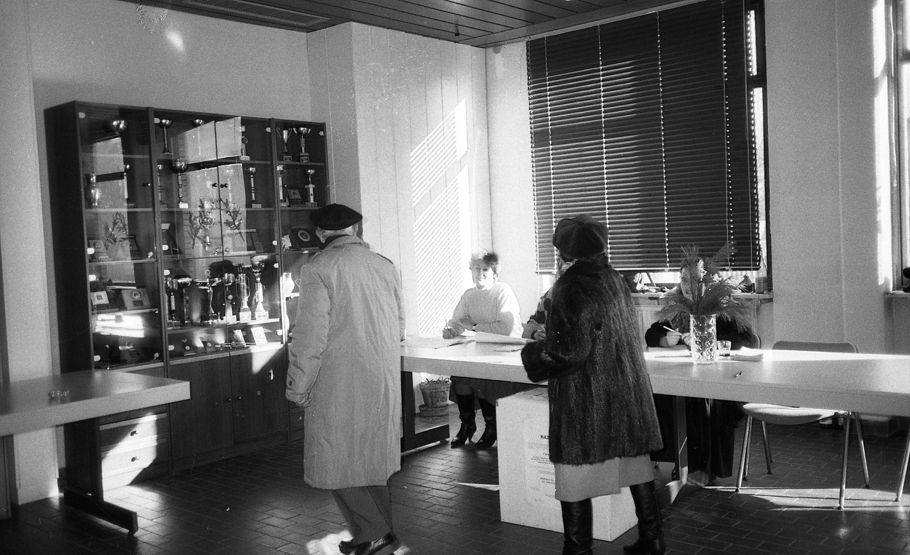

2
DAN
PLEBISCITA
PLEBISCITA
ODŠLI
SMO NA
VOLIŠČA
SMO NA
VOLIŠČA
Izvedba plebiscita
Nedelja, 23. december, zgodovinski in usodni dan za samostojno Slovenijo in njeno neodvisnost na političnem, gospodarskem in kulturnem področju. O tem so odločali vsi državljani Jugoslavije, ki so dopolnili 18 let, s poslovno sposobnostjo in stalnim prebivališčem v Sloveniji. Plebiscita se je lahko udeležilo 1.457.020 volivcev. Glasovalnih mest je bilo 4143, v 62 občinah po vsej Sloveniji, od tega 102 po bolnišnicah, domovih, zdraviliščih in priporih. Volišča so bila uradno odprta od 7.00 do 19.00 ure. Neuradni izidi so bili znani ob 24.00 uri.
Prva stran volilnega imenika za volišči št. 41 in 42 občine Ajdovščina.

Potrdilo občinske volilne komisije o prisotnosti predstavnika politične organizacije na volišču.
Izjava Republiške volilne komisije o neudeležbi na plebiscitu.
Kuverta Republiške volilne komisije za dokumente povezave s plebiscitom.
Obrazec Republiške volilne komisije za ugotavljanje izida glasovanja.
Obrazec Republiške volilne komisije za zapisnik o delu volilnega odbora.
Delo volilnega odbora
Določitev enotnih standardov za opremo volišč.
Navodilo Republiške volilne komisije za delo volilnega odbora pri izvedbi plebiscita 23. decembra 1990.
Seznam tujih delegacij v Sloveniji ob plebiscitu 23. decembra 1990.
Uvodnik TV Dnevnika 1 na dan slovenskega plebiscita.
Glasovanje volilnega upravičenca na plebiscitu dne 23. 12. 1990.
Neveljavne glasovnice
Primeri glasovnic, za katere so volilni odbori ugotovili, da niso veljavne.
Kuverte in poštni žigi
Priložnostne izdaje pisemskih ovojnic, dopisnic, razglednic in poštnih žigov ob samem plebiscitu ter ob 5., 10. in 20. obletnici plebiscita.
Priložnostne znamke na temo plebiscita ni bilo, saj je v času pred osamosvojitvijo Slovenije skrbelo za izdajo le-teh podjetje Jugomarka, ki je sodilo v sklop Skupnosti PTT podjetij Jugoslavije. Ob plebiscitu so bili v uporabi priložnostni žigi na glavnih slovenskih poštah. Z njihovo pomočjo so si filatelisti naredili različne priložnostne izdaje (ovitke, kartice itd.). Priložnostne žige so izdajali tudi ob 5., 10., in 20. obletnici plebiscita.

Multimedijsko gradivo
Glasovanje na domu.

Dogajanje pred voliščem v Šmarjeti pri Celju.
Prispevek iz porodnišnice.


Glasovanje starejših občanov.
Glasovanje v Bojancih.

Glasovanje političnih osebnosti.
ODMEVI V
ČASOPISJU
ČASOPISJU

Posebna izdaja Dela, Most v slovensko samostojnost.
Plebiscitni dan kot praznik (avtor: Jože Možina).

ZA VEDO
ŽELJNEJŠE
ŽELJNEJŠE
Program obiska tujih delegacij v Sloveniji ob plebiscitu, 22. in 23. decembra 1990, ki ga je pripravil Republiški sekretariat za mednarodno sodelovanje.

Predlog navodila št. 1 Republiške volilne komisije za izvedbo plebiscita o samostojnosti in neodvisnosti Republike Slovenije 23. decembra 1990.
PO
PLEBISCITU
PLEBISCITU